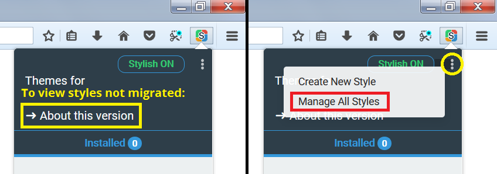
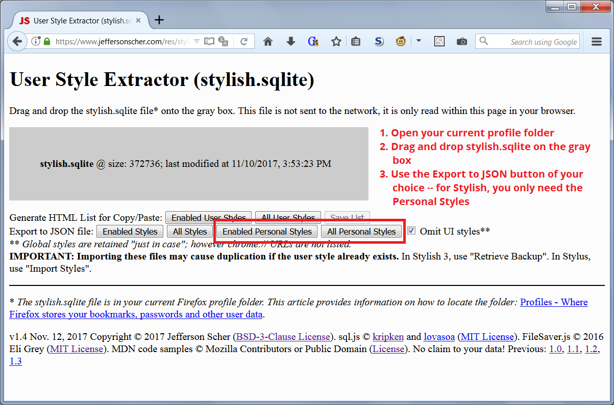

The Stylish for Firefox extension provided a convenient way to style both web pages and Firefox's user interface. Starting in Firefox 57, Stylish for Firefox loses its ability to style Firefox's user interface. Here are some options for what to do now. Check the last section on how to extract your saved user styles if automatic migration didn't meet your needs.
Styling Web Pages
If you have been using Stylish 2 for Firefox 56 or earlier, please see the Stylish Migration section below.
On July 3, 2018, Stylish was removed from the Add-ons site due to violations of data privacy policy: Notice. Later versions have been appearing on the versions page, but whether they present that same issue is not clear.
During 2017, several new extensions sprang up to apply custom style rules to web pages. Similarly to Stylish for Firefox, these extensions allow you to install style rules from userstyles.org or create your own styles. Here are links to two of the more popular extensions as of this writing. Please read the descriptions and reviews before installing any extension to make sure you know what you're getting.
- Stylus (works well)
Data migration steps: Moving User Styles (Themes) from Stylish 3.x to Stylus - Many others catalogued here
Firefox also supports a file named userContent.css to contain rules to apply to websites. You may need this page to style "about" pages, such as the new tab page and built-in home page. For more information on that file, see the article “UserContent.css” on the MozillaZine Knowledge Base (an unofficial site maintained by users of Mozilla software).
Note: Stylish 3 and Stylus do not work if you have enabled automatic private browsing on the Options/Preferences page, Privacy & Security panel. That is set by using either "Never remember history" or checking the box for "Always use private browsing mode."
Styling Firefox's User Interface
At startup, Firefox reads a file named userChrome.css and applies the style rules in that file globally. Stylish for Firefox was more convenient, but this method can do nearly everything Stylish could do. The main exception is that a few areas of the user interface, such as scroll bars, are off limits to the userChrome.css file (rules in Firefox's built-in files will override your custom rules).
For more information, see:
Stylish Migration (from version 2.x to another version/extension)
Stylish 2 saved your user styles in a file named stylish.sqlite. This file will continue to rest in your Firefox profile folder indefinitely, so you have the opportunity to migrate it to Stylish 3 or your other choice of extension. Firefox 57 extensions can't extract your style rules, so some tricks are involved.
Stylish 3: Semi-Automatic Migration
If your Stylish was updated to Stylish 2.1.1 while you still had Firefox 56, before you got Stylish 3.0, your user styles were copied to a file here: [profile folder]\browser-extension-data\{46551EC9-40F0-4e47-8E18-8E5CF550CFB8}\storage.js. Stylish 3 then migrated some of your user styles from that file to its new database. As far as I can tell, the chosen few:
- Were installed from userstyles.org
- Apply to web pages, not Firefox's interface
Where are the others? Styles missing from the Manage All Styles page can be found by clicking the "About this version" link. That launches a page which shows your full set of old user styles, and instructions for adding them to the set recognized by Stylish 3 through a manual copy/paste process. (This is also how you could preserve your own edits to styles you installed from userstyles.org.)

That's a pain. If you have a lot of personal (also known as local) user styles to re-create, you may want to try generating an importable file using the tool mentioned in the next section. Browser UI styles will need to be migrated to a userChrome.css file (which is the subject of the rest of this site).
Manual Migration
If the Stylish 2.1.1 migration did not work, or if you are changing extensions, or if you want to extract styles that apply to the user interface, or if you need to rescue your personal styles, you first need to extract your user styles from the sylish.sqlite database. You can use this extractor (large file load): User Style Extractor. There are several different options for how to generate usable files. For styles modifying the UI, you can copy/paste according to the rules of the userChrome.css file. For Stylish or Stylus, you can use the Export JSON option.
